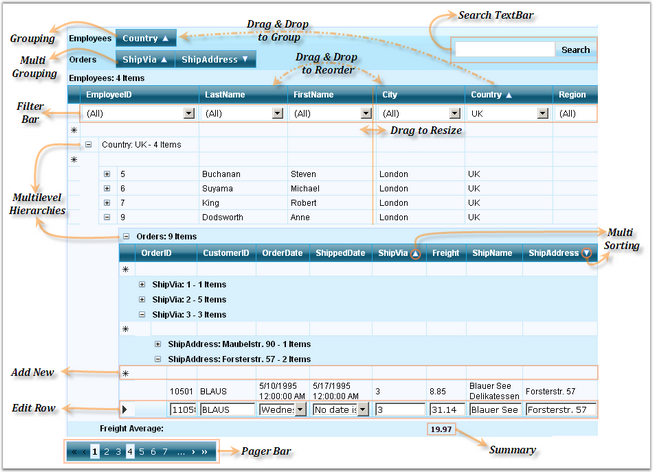

The following screen shot illustrates the structure of the GridGroupingControl.

Figure 12: Structure of GridGroupingControl
Elements and Features
· Drag and Drop to start using the controls: no coding required.
· Grouping: GridGroupingControl allows you to group the data by just dragging the Header to the Group Drop area in the top of the Grid. Multilevel grouping is an added advantage.
· Sorting: you can programmatically sort by one or more columns and the users can also do the same during runtime.
· Filtering: allows you to filter the data in the control using the Filter Bar.
· Paging: GridGroupingControl provides built-in paging functionality. Also, it includes a Pager Bar that allows you to navigate between the various pages in the grid and a Paging control is available that can be used with the grid.
· Summaries: you can easily create advanced summaries by adding SummaryRows and SummaryColumns through designer or code.
· Column Resizing: GridGroupingControl supports convenient runtime resizing of the grid column.
· Column Reordering with Drag-and-Drop: GridGroupingControl allows users to quickly reorder the columns by simply dragging their headers.
· Sizing: you can specify a custom size for the columns, rows, group captions and so on. You can also specify a custom size for the grid and either let it scroll or shrink.
· Scrolling: specify a Width and Height for the control and the grid will automatically show Scroll Bars if necessary.
· MultiLevel Hierarchy: GridGroupingControl can generate a hierarchical presentation from the multiple source table with the relations defined which provides a treelist-like data presentation. GridGroupingControl allows presentation of related Data Sets as hierarchical structures of tables. Two or more tables can be related in a single grid, and the Data can be displayed in a Hierarchical Structure.
· MultiRowRecords: there is built-in support for rendering a single record in multiple rows, in other words, wrapped rows.
· MultiRow Selection and Area Selection: you can easily select multiple rows using 'Ctrl + Click', or by simply dragging a range over the rows which you want to select.
· Supports flexible Editing Functionality.